D4RT 深读：动态 4D 重建为什么要从“解码整帧”改成“查询任意点”？
导读。D4RT 真正要回答的问题不是“能否从视频恢复一个漂亮点云”，而是：能否用一个统一、前馈、可并行的接口，同时回答动态场景中的深度、点云、点轨迹、相机内外参这些几何问题？论文的答案是把“逐帧 dense decoding”改写为“给定一个时空 query，直接问这个点在目标时间和目标相机中位于哪里”。这使模型不必一次性解码所有像素，也不必为每个任务维护独立 head。
一句话贡献。D4RT 先用全局视频 encoder 得到 scene representation，再用轻量 query decoder 独立回答 $q=(u,v,t_{src},t_{tgt},t_{cam})$ 对应的 3D position $P$。这把多种 4D 任务统一为同一种“问点在哪里”的接口。
本文图像从 CVPR PDF、Supplement 和项目页原图提取为 PNG；不使用占位图。点击任意论文图可打开本地原始 PNG。

1. 先问核心问题：动态 4D 重建到底卡在哪里？
如果场景是静态的，多视角几何和 feedforward 3D 重建已经可以给出相机、深度和点云。但现实视频里有两个运动同时发生：相机在动，物体也在动。这会制造一个经典矛盾：纯重建方法容易把动态物体“拖影/复制”到不同位置；纯 tracking 方法能跟踪少量点，却常常只从一个参考帧出发，导致被遮挡区域或首帧不可见区域缺失。
问：为什么不能让模型直接输出每一帧的 dense depth / point map，然后再后处理成 4D？
引导：想一想动态物体在不同帧中并不是同一个静态表面；逐帧输出会给每帧一个局部答案，却不自动保证跨时间的一致身份。
答：逐帧 dense decoder 会把复杂度绑在所有像素和所有帧上，并且跨帧 correspondence 仍要额外解决。D4RT 反过来问：我是否可以只在需要的位置发 query，并让 query 显式携带 source time、target time 和 camera time？
2. 核心贡献：作者真正新增了什么？
- 统一 query interface。同一 decoder 可被用于 point track、point cloud、depth map、camera extrinsics 和 intrinsics。
- 轻量独立 decoder。每个 query 独立通过 cross-attention 读取 global scene representation，避免 heavy dense per-frame decoder 和多个 task-specific decoders。
- all-pixels tracking 推理算法。不是对所有 $T^2HW$ 点暴力查询，而是用 occupancy grid 只从未访问像素启动新轨迹。
- 系统实验。论文用 TAPVid-3D、Sintel、ScanNet、KITTI、Bonn、Re10K 等覆盖 tracking、depth、point cloud、pose，并给出 local patch、backbone size、auxiliary losses、initialization、public-only training 等消融。
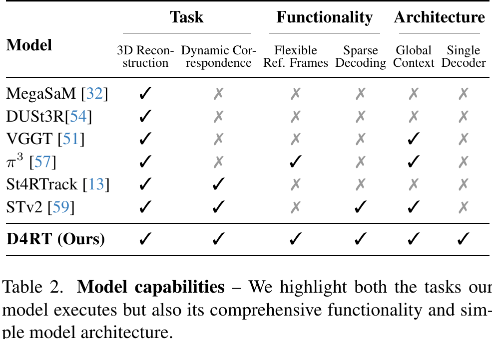
3. 数据集与任务：模型到底学了哪些监督信号？
D4RT 的训练 mixture 来自 BlendedMVS、Co3Dv2、Dynamic Replica、Kubric、MVS-Synth、PointOdyssey、ScanNet++、ScanNet、Tartanair、VirtualKitti、Waymo Open，以及 internal datasets。主训练使用 48-frame clips、256×256 resolution，每个视频解码 2048 random queries，并对特定区域 oversample。论文说明使用 internal data，但没有公开其规模、清洗标准和采样比例。
| 来源/任务 | 作用 | 输入 → 输出 | 论文披露程度 |
|---|---|---|---|
| 多源公开/内部视频数据 | 训练 unified 4D model | Video clip + sampled queries → normalized 3D point position / auxiliary targets | 公开源列出；internal data 规模与构成未说明 |
| TAPVid-3D | 评测 3D tracking | video + track queries → camera/world coordinate 3D tracks | 论文说明 DriveTrack / ADT / PStudio 子集 |
| Sintel / ScanNet / KITTI / Bonn / Re10K | 评测 depth、point cloud、pose | video → point cloud / depth / camera pose | 指标与结果表给出 |
| public-only training ablation | 隔离 internal data 的影响 | 14 public datasets only → 多任务评测 | Supplement Table 12 给出结果 |
问：D4RT 的监督是不是只靠 3D point L1？
答：不是。主监督是 normalized 3D point position 的 L1，同时还有 2D position、visibility、displacement、normal、confidence 等辅助预测。辅助损失的意义是让 decoder output 不只记一个点坐标，而是保留与投影、可见性、运动和局部几何有关的信息。
4. Pipeline：从视频到 4D 查询答案
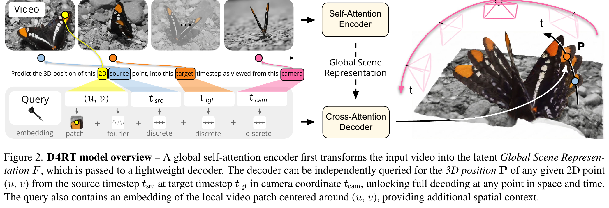
4.1 数据流、模型流、推理流分别是什么？
- 数据流：视频 clip 被 resize/tokenize；原始 aspect ratio 作为额外 token 输入；训练时从可监督轨迹中采样 query，且 30% 偏向 depth discontinuity 或 motion boundary。
- 模型流：ViT encoder 交替进行 local frame-wise attention 与 global self-attention，输出全局场景表征 $F$；query token 加入坐标 Fourier feature、三个 timestep embeddings 和 local RGB patch embedding。
- 训练流：少量 query 被解码并计算 3D point / auxiliary losses，避免每个视频全 dense decoding。
- 推理流：根据任务构造不同 query 的 Cartesian product；需要 dense all-pixels tracking 时，Algorithm 1 用 occupancy grid 自适应跳过已经被轨迹覆盖的像素。
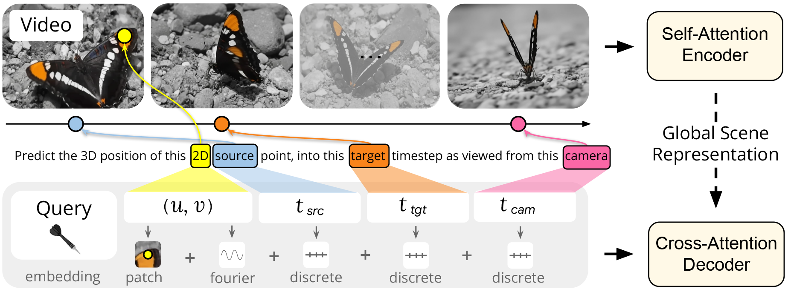
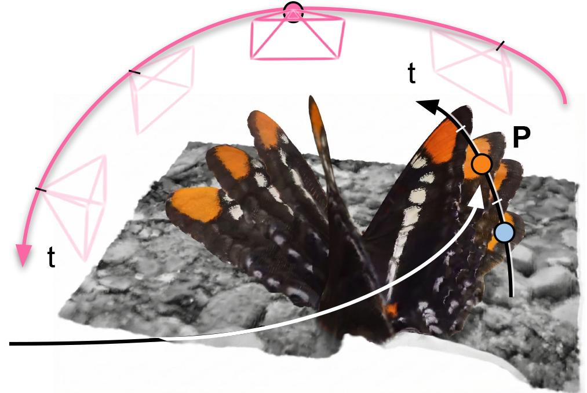
问：如果去掉 query interface，回到 dense per-frame decoding，会损失什么？
答：会重新把所有任务绑定到固定输出网格上：depth 要 depth head，pose 要 pose head，tracking 要 tracking head；同时 dense all-frame decoding 需要处理大量实际并不需要的点。D4RT 的设计让任务由“构造 query”定义，而不是由“换 decoder head”定义。
5. 模型与方法：query 到底问了什么？
5.1 Unified decoding：同一张表读懂五类任务
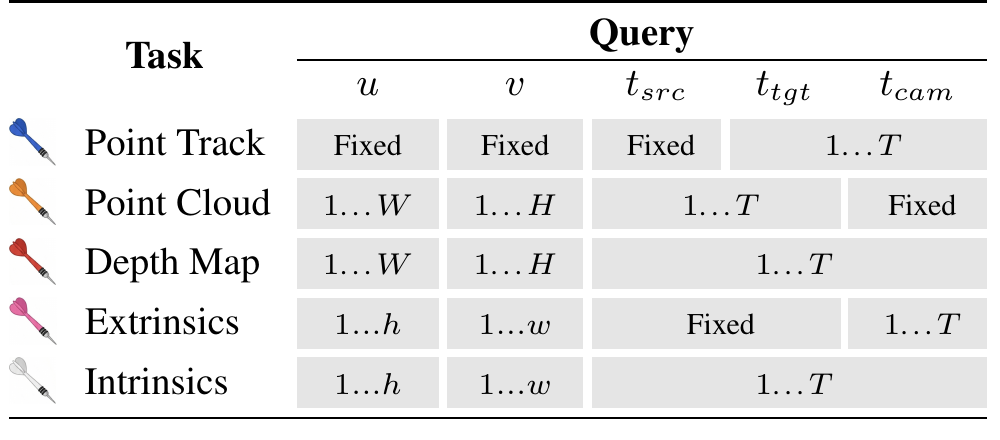
先问为什么需要这套接口。传统 4D/3D-from-video 把每个任务硬编码进网络结构：depth 有 depth head、pose 有 pose head、tracking 有 tracking head，输出形状也被钉死成稠密网格。代价有两笔——任务数等于 head/模型数，且稠密逐帧解码会在每个像素 × 每帧上花算力，all-pairs tracking 更是 $O(T^2HW)$。D4RT 的思路是把“要输出什么”从架构挪到输入：场景只编码一次，任务由构造哪种 query 决定。
query 的形式可以写成：
$(u,v)$ 是 source frame 上的 2D point；$t_{src}$ 指明这个点从哪一帧来；$t_{tgt}$ 指明希望它被追踪到哪个时间；$t_{cam}$ 指明用哪个相机坐标系表达输出 3D position。这个设计允许“时间”和“参考相机”解耦，因此同一物理点可以被问到不同时间、不同 camera coordinate 中的位置。
关键在于：四类任务只是对同一接口“固定哪几维、扫哪几维”的不同写法——point track 固定 $(u,v,t_{src})$、扫 $t_{tgt}$；depth / pointmap 令 $t_{src}=t_{tgt}=t_{cam}$、扫 $(u,v)$；外参把同一批点放进两个 $t_{cam}$ 再求刚体变换；内参由返回的 3D 点反解（式 2）。所以统一不是靠一个多任务 loss 把几个 head 拼起来，而是把“基本单位”从“稠密输出网格”换成“可单独回答的 query”。
这套统一成立的前提
它假设每个关心的任务都能分解成“一个点 + 源时间 + 目标时间 + 参考相机”。对可点定位的几何量（轨迹、深度、点图、位姿）成立；对不可点定位的量（语义标签）或 式 2 之外的相机模型（鱼眼、强畸变）则不成立——这是接口表达力的边界，而不是实现细节。
5.2 相机外参与内参如何从 query 中出来？
对相机外参，论文构造两组 query：$q_i=(u,v,i,i,i)$ 与 $q_j=(u,v,i,i,j)$。它们描述同一批 3D 点在不同参考相机坐标下的位置；两组点之间的刚体变换通过 Umeyama 算法求解。对内参，论文假设 pinhole camera 且 principal point 为 $(0.5,0.5)$，由输出点 $P=(p_x,p_y,p_z)$ 反推出焦距：
问：为什么要把 local RGB patch 放进 query？全局 encoder 不是已经看过整段视频了吗？
答：全局表征负责 scene-level consistency，但具体 query 仍要区分低层局部细节：边界、发丝、薄结构、前景/背景分界。local RGB patch 给 decoder 一个以 $(u,v)$ 为中心的局部 appearance cue，帮助它从全局特征中找到更可靠的对应点。
5.3 All-pixels tracking：避免 $O(T^2HW)$ 的关键算法
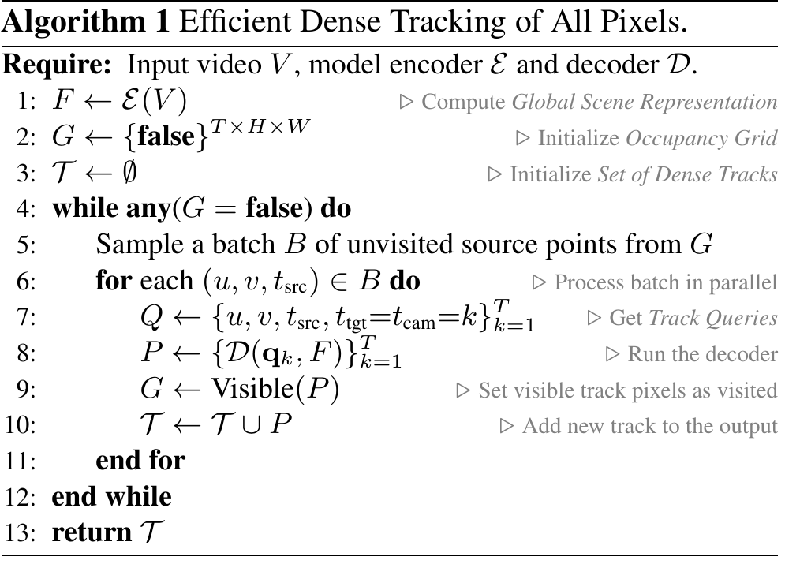
论文给出直觉：暴力为所有像素、所有 source time、所有 target time 查询会产生 $O(T^2HW)$ 级别的 query。Algorithm 1 将新轨迹只从未被覆盖的位置启动，经验上带来 5–15× 自适应加速，运动越简单、冗余越高，节省越明显。
真正承重的假设：query 间条件独立
无论是并行扩展还是 occupancy-grid 跳过，都建立在“给定全局表征 $F$，每个 query 可被独立解码”之上。这把一致性的担子全压到 $F$ 上：$F$ 必须已经编码跨帧、跨视角的场景一致性，decoder 才能不看别的 query。这条假设可以从两个独立角度交叉验证：(i) 效率侧——若 query 不独立就无法安全跳过，而 §7.1 的 throughput（60 FPS 下 550 vs 29）说明跳过确实成立；(ii) 正确性侧——§7.4 的初始化消融显示随机初始化崩溃、VideoMAE 初始化大幅领先，正说明“全局视频表征”才是这套接口的承重底座，而不是 query trick 本身。
5.4 训练目标：主坐标损失 + 多个辅助几何信号
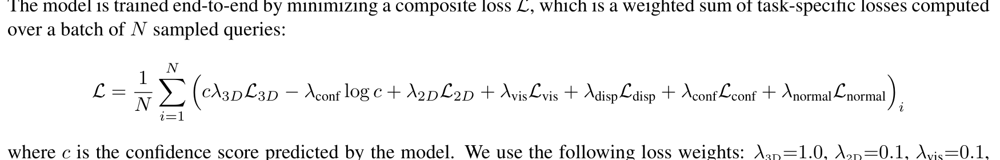
Supplement 给出的训练细节包括：AdamW、weight decay 0.03，学习率 warmup 2,500 steps 到 $10^{-4}$，再 cosine decay 到 $10^{-6}$，gradient clipping 最大 L2 norm 为 10。训练增强包括时序一致 color jitter、random color drop、Gaussian blur、random crop、random zoom 和 temporal stride subsampling。
6. 训练细节与算力账本
| 项目 | 论文披露 | 解释 |
|---|---|---|
| Encoder | ViT-g，40 layers，spatio-temporal patch size 2×16×16 | 约 1B 参数；使用 VideoMAEv2 pre-trained weights 初始化 |
| Decoder | 8-layer cross-attention decoder，约 144M 参数 | 轻量点级解码器；任务差异由 query 维度决定 |
| Clip / Resolution | 48 frames，256×256 | 固定方形输入；原 aspect ratio 作为 token 提供 |
| Queries | 每视频 2048 random queries；30% 偏向 depth/motion boundaries | 把训练预算集中在边界和动态区域 |
| Optimizer / LR | AdamW；weight decay 0.03；warmup 2500 steps 到 1e-4，cosine 到 1e-6 | Supplement 披露 |
| 训练步数与硬件 | 500K steps；local batch size 1；64 TPU chips；just over 2 days | 论文没有披露 TPU 型号、总 token throughput、precision、activation checkpointing |
粗略算力说明
按论文披露数字做算术估算：64 TPU chips × “just over 2 days” ≈ 至少 128 TPU-chip-days。由于论文未说明 TPU 型号、实际训练时长精确小时数、并行策略和利用率，这不等同于实际账单，也不应换算成可复现成本。
问：这篇论文的可复现性最缺哪一块？
答：模型结构、loss、训练时长、公开数据列表披露较多；但 internal datasets 的具体规模、采样比例、清洗流程、真实训练脚本和权重/代码发布状态没有完整公开。项目页提供 PDF、arXiv 和 blog post，未看到官方 code 链接。
7. 实验结果：每张图表到底证明什么？
7.1 速度/精度：效率主张是否站得住？
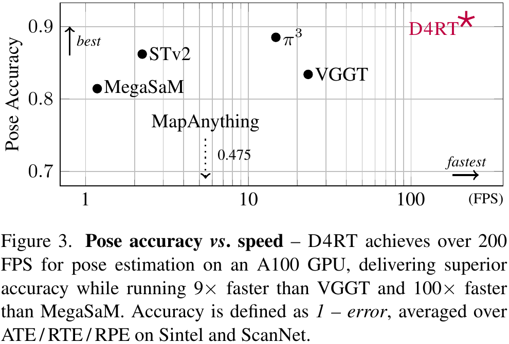
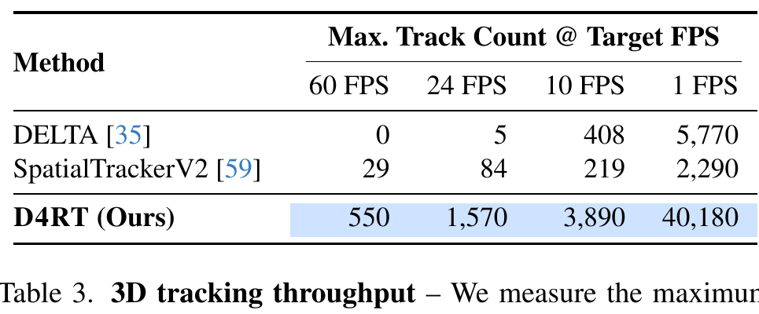
判断：效率主张比较有力，因为表 3 在同一单 A100 目标 FPS 下报告 track count，而不是只报告单次 demo 时长。但读者仍需注意：不同方法的输入预处理、输出定义和实现优化可能不同，论文的公平性主要由作者实验设置保证。
7.2 定性重建：动态物体是否真的减少拖影/空洞？
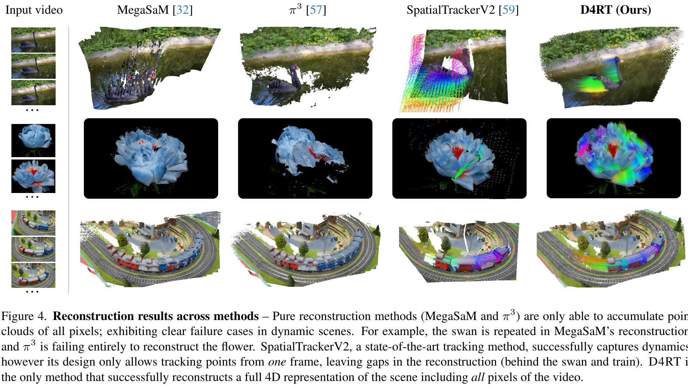
判断：这张图是 D4RT 最有解释力的定性证据，因为它对齐了本文动机：不是“静态点云更漂亮”，而是动态对象和被遮挡区域是否能被统一追踪与补全。
7.3 主实验表：D4RT 在哪些任务上最突出？
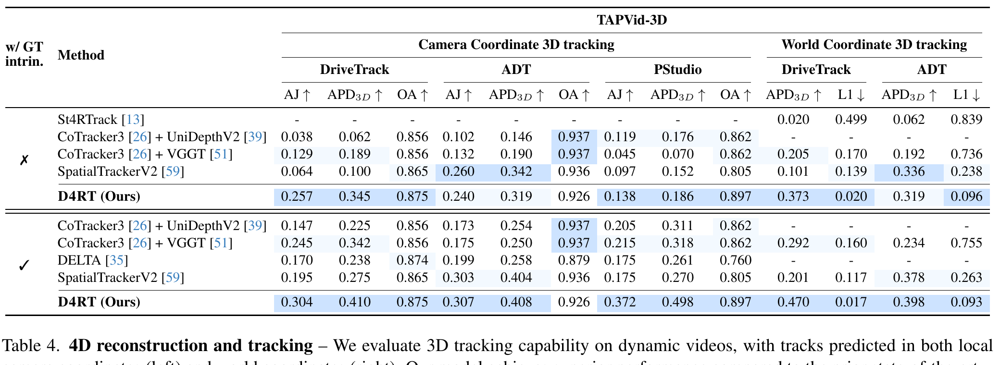
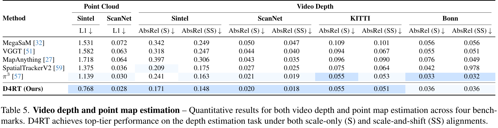
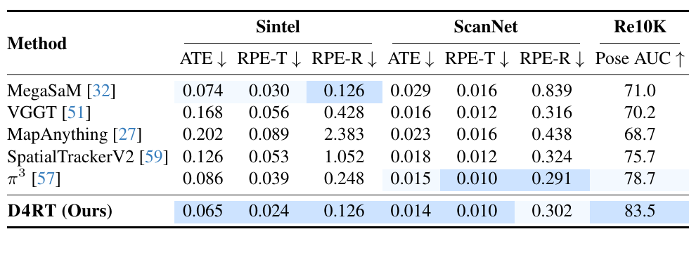
问：这些实验是否足以支持“统一模型优于专用模型”？
答：支持“在作者评测集合上，一个 query-based model 可以同时达到 strong performance 和更高效率”。但它没有证明所有真实部署场景都优于专用模型，尤其是长视频、非 pinhole/fisheye、训练分布外动态、极端遮挡等场景仍需要额外验证。
7.4 消融：哪些设计真的必要？
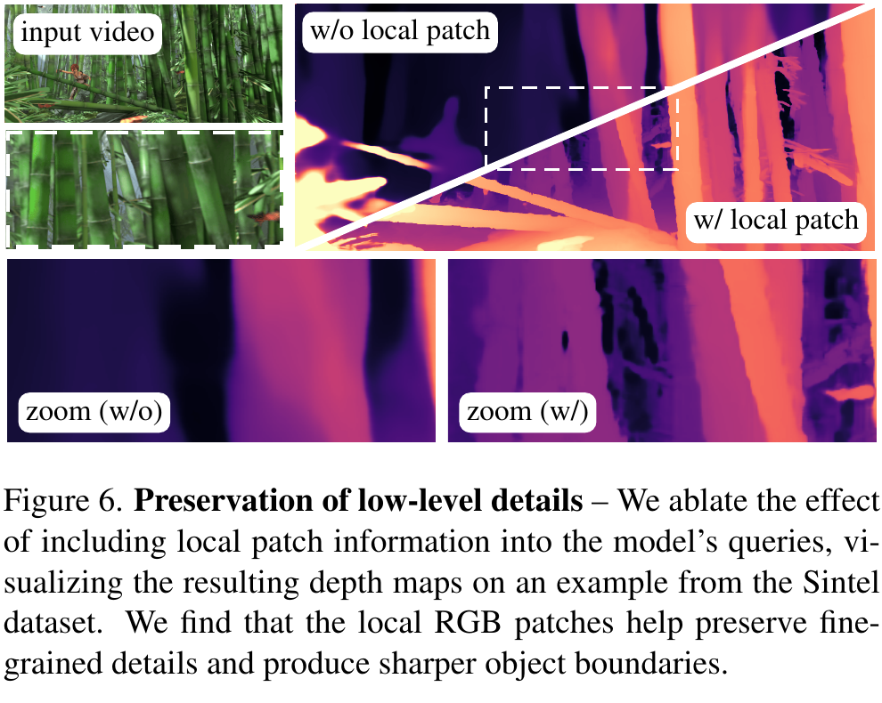
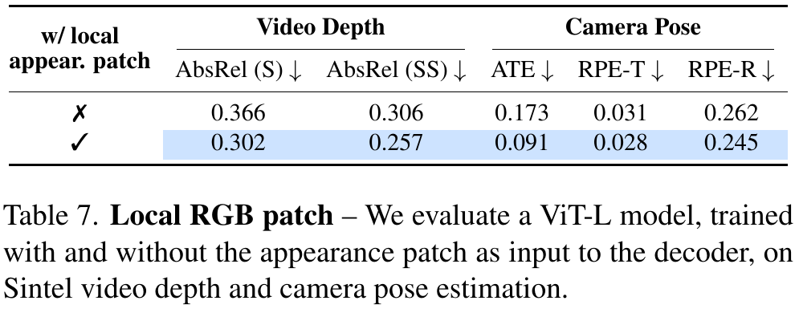
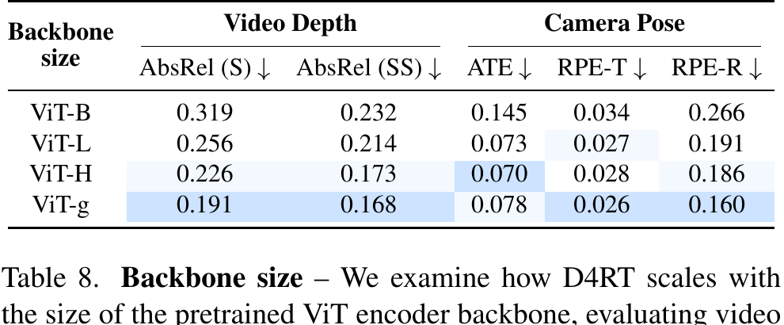
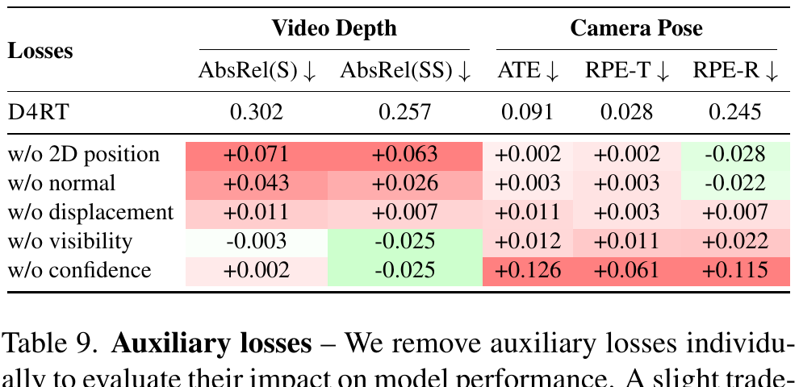
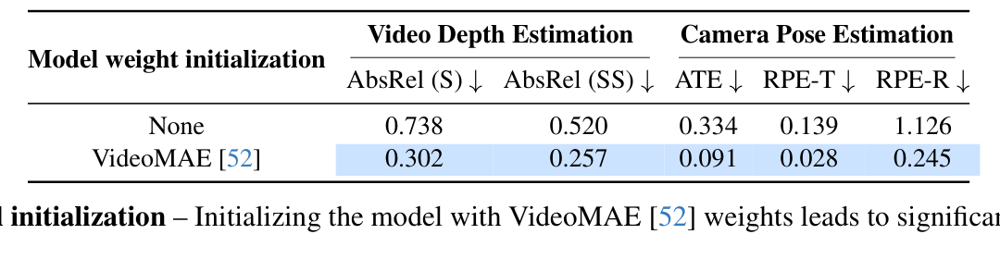
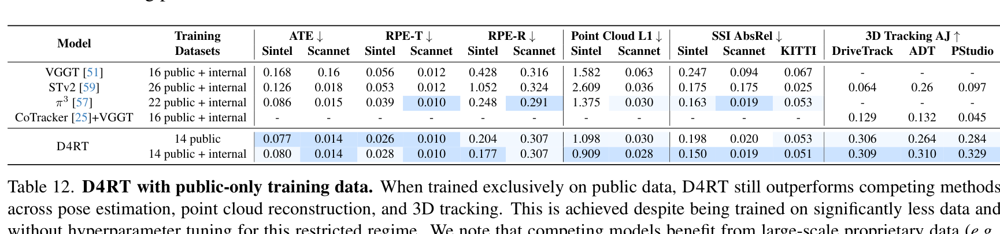
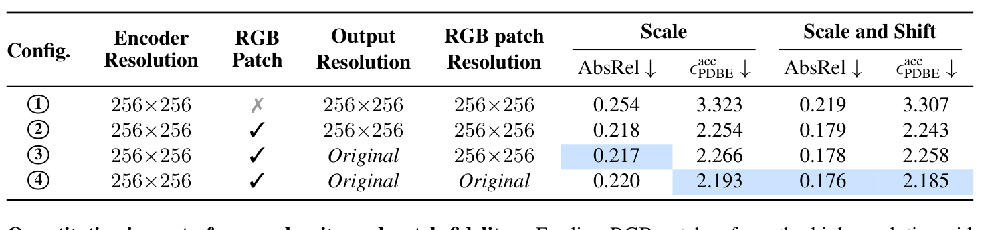
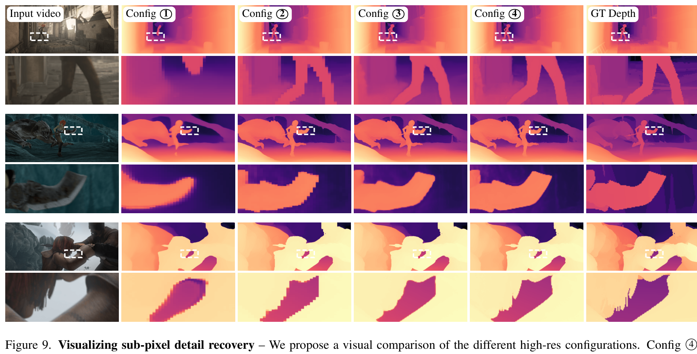
7.5 更多定性：项目页和 Supplement 图该怎么读？
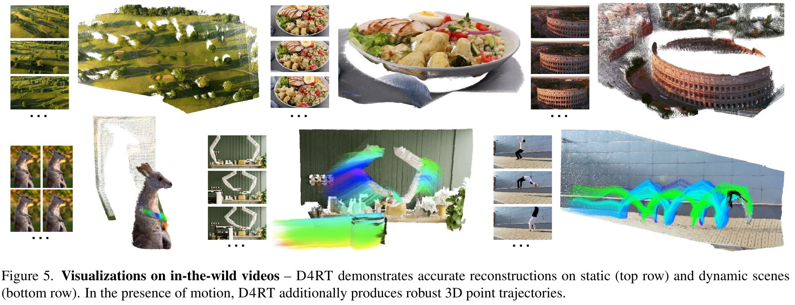
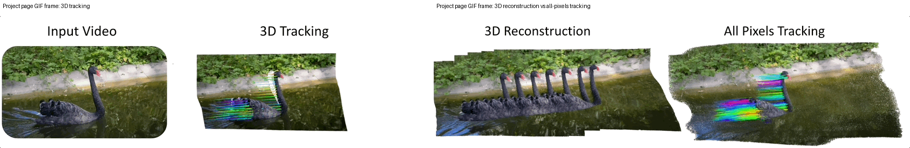
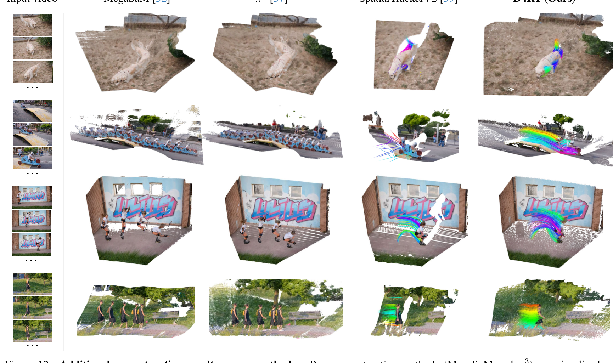
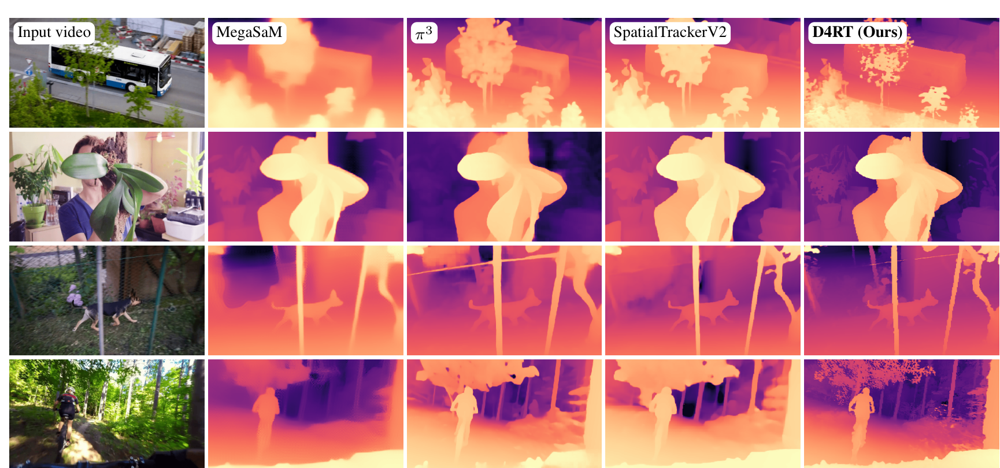
8. 局限与复现门槛
- Internal data 未完全公开。论文列出公开数据源，也给出 public-only ablation，但主模型仍使用 internal datasets；规模、筛选、比例未说明。
- 代码/权重状态。项目页当前提供 PDF、arXiv 和 blog post；官方代码链接论文/项目页未说明。
- 长视频与真实部署。Supplement 给出 overlapping segments + Sim(3) alignment 的长视频处理，但未等价于完整 SLAM/loop closure 系统。
- 相机模型假设。主文内参推导默认 pinhole 和 principal point；fisheye 可通过非线性 refinement 纳入，但工程细节有限。
- 指标仍是代理。ATE、RPE、AbsRel、AJ、APD3D 不能完全覆盖 AR/robotics 中的延迟、稳定性、闭环鲁棒性和安全边界。
问：如果我要借鉴 D4RT，最应该迁移什么？
答：不是盲目复制 ViT-g，而是迁移它的问题重写方式：把多输出 dense prediction 变成一个可稀疏采样、可并行计算、可组合任务的 query interface。对于很多 3D/视频任务，真正的效率来自“只问需要问的问题”。
资料来源与图像说明
- Chuhan Zhang et al. Efficiently Reconstructing Dynamic Scenes One D4RT at a Time. CVPR 2026 paper PDF / arXiv 2512.08924.
- D4RT project page：用于项目方法图、capabilities 动图关键帧和作者/机构信息。
- Google DeepMind blog：用于交叉核验项目背景与效率叙述；正文中的实验判断以论文表格为准。
- 图像说明：本文所有论文图表均保存为本地 PNG，来源记录见
assets/figures_manifest.json；缺失信息统一标注“论文未说明”。